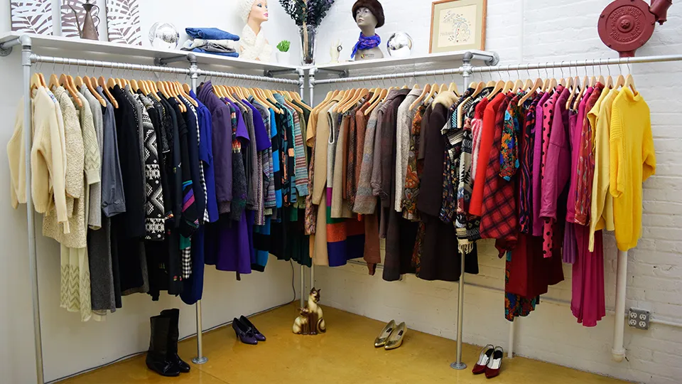

Instructies
Ontdek hoe kledingruil werkt en leer hoe je jouw kledingkast kunt vernieuwen zonder een cent uit te geven! Leer hoe je jouw ongedragen kleding een nieuw leven kunt geven en tegelijkertijd een steentje bijdraagt aan een schonere aarde.
Hoe werkt het?
Kledingruil werkt overal weer een tikkeltje anders. Zo zijn er kledingruilwinkels, waar je gewoon naar binnen kunt lopen, maar er zijn ook veel kledingruilevenementen. Zulke evenementen zijn altijd gepland, en je moet bijna altijd entree betalen. Dit gaat vaak om een klein bedrag van zo'n 3 euro, wat vervolgens wordt geschonken aan een goed doel! Vaak vinden dergelijke ruilbijeenkomsten plaats in een openbare en creatieve ruimte, zoals een buurthuis of een omgebouwd café. Je brengt kledingstukken mee die je niet meer gebruikt en geeft ze af aan een vrijwilliger bij een speciale tafel voor inname.
Wat zijn de regels bij kledingruil?
- Je moet een bepaald minimum en maximum aantal kledingstukken meenemen.
- Alle kledingstukken dienen schoon en onbeschadigd te zijn.
- In bepaalde gevallen kunnen accessoires ook worden geaccepteerd.
- Dameskleding is vaak beschikbaar, met soms speciale edities voor kinderkleding. Helaas is er voor heren (nog) beperkt aanbod.
Kledingruil Tips
- Het is raadzaam kleding te dragen waar je gemakkelijk in kunt passen, omdat paskamers vaak ontbreken. Een handige tip is om iets te dragen dat gemakkelijk uit kan, zoals een zwarte legging met een spaghettitopje eronder. Hier overheen kun je dan allerlei kledingstukken passen.
- Het is een slim idee om iets uit het rek te pakken waarover je twijfelt, omdat het snel kan verdwijnen als je je omdraait. Veel mensen verzamelen een paar twijfelgevallen en gaan dan passen wanneer ze hun handen vol hebben. Op die manier kunnen ze een weloverwogen keuze maken en hangen ze alles terug wat ze niet willen hebben. Dit proces wordt vaak herhaald tijdens het winkelen.
- Neem een boodschappentas of rugtas mee waarin je je aankopen kunt bewaren. Op die manier heb je je handen vrij om door de rekken te gaan en kun je gemakkelijker winkelen.
- Ook al is het een regel dat alle kledingstukken onbeschadigd moeten zijn, in de praktijk kan er soms een kapot item tussendoor glippen. Het is daarom verstandig om de volgende controle uit te voeren: Controleer de oksels op gaten en vlekken. Controleer de zomen op rafels. Controleer de knoopjes en ritsen op eventuele schade.
- Heb geduld tijdens het winkelen. De rekken worden elke paar minuten aangevuld, dus als er op het eerste gezicht niets tussen zit wat je bevalt, is het verstandig om even te wachten. Neem een pauze, drink een kopje thee of ga op een rustig plekje even passen. Maak vervolgens nog een rondje en wie weet vind je dan wel iets dat aan je wensen voldoet.